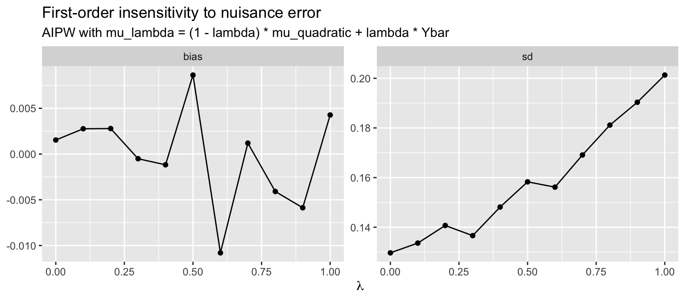

library(ggplot2)
options(digits = 4)
set.seed(20260502)
summarise_estimators <- function(mat, truth) {
data.frame(
estimator = colnames(mat),
bias = colMeans(mat) - truth,
sd = apply(mat, 2, sd),
rmse = sqrt(colMeans((mat - truth)^2))
)
}15. AIPW and Double Robustness
Influence functions, Neyman orthogonality, and the augmented IPW estimator
Under randomization, the difference in means \(\hat\tau_{DM} = \bar Y_1 - \bar Y_0\) is unbiased for the average treatment effect (ATE). So why bother with anything more elaborate? Two answers run through HW2–HW5:
- Variance reduction. Adjusting for baseline covariates \(X\) that predict \(Y\) shrinks the residual variance that drives the sampling distribution. Lin’s interacted regression and the inverse-probability-weighted (IPW) estimator are two distinct ways to do this; the augmented IPW (AIPW) estimator combines both.
- Robustness. AIPW is doubly robust: it is consistent if either the outcome model \(\widehat\mu_d(x)\) or the propensity \(\widehat e(x)\) is correctly specified — you do not need both. And it is first-order insensitive to estimation error in \(\widehat\mu_d\): noisy nuisance estimates do not pollute the limiting distribution.
This chapter ties together the simulation thread that runs through HW2 Part II, HW4 Problems 4–6, and HW5 Problems 4–5. The vocabulary — influence function, Neyman orthogonality, semiparametric efficiency — belongs to modern semiparametric estimation, but the underlying machinery (CEF + LLN + CLT + Slutsky) is exactly what we built in Chapters 2 and 8.
1 The simulation DGP
We use the design from HW2: a nonlinear baseline CEF and smooth treatment-effect heterogeneity. The covariate \(X\) predicts both potential outcomes, so adjustment can reduce variance.
tau_true <- 1
sigma <- 2
dgp <- function(n, p = 0.5) {
X <- rnorm(n)
eps <- rnorm(n, sd = sigma)
Y0 <- 2 * X + 0.5 * X^2 + eps
Y1 <- Y0 + tau_true + 0.8 * (X^2 - 1)
D <- rbinom(n, 1, p)
Y <- D * Y1 + (1 - D) * Y0
data.frame(Y = Y, D = D, X = X, Y0 = Y0, Y1 = Y1)
}Note that the conditional means \[ \mu_0(x) = 2x + 0.5x^2, \qquad \mu_1(x) = 2x + 0.5x^2 + 1 + 0.8(x^2 - 1) \] are quadratic in \(X\), so a linear outcome model \(Y \sim D + X\) (without interactions or squares) is misspecified. We will exploit this misspecification when we test double robustness.
2 Three baseline estimators
dm <- function(d) mean(d$Y[d$D == 1]) - mean(d$Y[d$D == 0])
## Lin (interacted) regression: OLS slope on D in
## Y ~ 1 + D + (X - Xbar) + D*(X - Xbar)
lin <- function(d) {
Xc <- d$X - mean(d$X)
fit <- lm(d$Y ~ d$D + Xc + d$D:Xc)
unname(coef(fit)["d$D"])
}
## IPW with known propensity p
ipw <- function(d, p = 0.5) {
mean(d$D * d$Y / p - (1 - d$D) * d$Y / (1 - p))
}All three estimators are consistent for \(\tau\) under randomization, but they exploit randomization in different ways:
- \(\hat\tau_{DM}\) uses only that \(\E[Y \mid D = d] = \E[Y(d)]\) when \(D\) is independent of potential outcomes.
- \(\hat\tau_{Lin}\) adds covariate adjustment via OLS with treatment \(\times\) covariate interactions; FWL shows it is a difference of residualized means.
- \(\hat\tau_{IPW}\) reweights observed outcomes so each unit’s contribution to its arm’s mean is unbiased for the marginal \(\E[Y(d)]\).
A short Monte Carlo:
B <- 2000
n <- 1000
mc_baselines <- t(replicate(B, {
d <- dgp(n)
c(DM = dm(d), Lin = lin(d), IPW = ipw(d))
}))
summarise_estimators(mc_baselines, tau_true) estimator bias sd rmse
DM DM -0.004975 0.2022 0.2022
Lin Lin -0.004085 0.1563 0.1563
IPW IPW -0.006291 0.2119 0.2119All three estimators are essentially unbiased. The Lin estimator has the smallest standard deviation because it uses the predictive content of \(X\). The IPW estimator has the largest standard deviation here — weighting alone, without an outcome model, throws away information. AIPW will fix that.
3 The AIPW estimator
Let \(\mu_d(x) = \E[Y(d) \mid X = x]\) and let \(\widehat\mu_d(x)\) be a fitted outcome model. The AIPW estimator is \[ \widehat\tau_{\text{AIPW}} \;=\; \frac{1}{n}\sum_{i=1}^n \Bigl[ \widehat\mu_1(X_i) - \widehat\mu_0(X_i) \;+\; \tfrac{D_i}{p}\bigl(Y_i - \widehat\mu_1(X_i)\bigr) \;-\; \tfrac{1-D_i}{1-p}\bigl(Y_i - \widehat\mu_0(X_i)\bigr) \Bigr]. \]
Two ways to read this:
- Outcome regression with an IPW correction. The first term \(\widehat\mu_1 - \widehat\mu_0\) averages the predicted treatment effect at each \(X_i\). The remaining terms are mean-zero IPW residuals that correct for misspecification of \(\widehat\mu_d\).
- IPW with an outcome-regression control variate. Equivalently, it is the IPW estimator with \(\widehat\mu_d(X_i)\) subtracted as a covariate that has known mean zero in expectation.
aipw <- function(d, p = 0.5,
mu_fit = function(d, arm) {
m <- lm(Y ~ X + I(X^2), data = d, subset = (D == arm))
predict(m, newdata = d)
}) {
mu1 <- mu_fit(d, 1)
mu0 <- mu_fit(d, 0)
mean(mu1 - mu0
+ d$D / p * (d$Y - mu1)
- (1 - d$D)/(1-p) * (d$Y - mu0))
}Adding AIPW to the Monte Carlo:
mc_all <- t(replicate(B, {
d <- dgp(n)
c(DM = dm(d),
Lin = lin(d),
IPW = ipw(d),
AIPW = aipw(d))
}))
summarise_estimators(mc_all, tau_true) estimator bias sd rmse
DM DM 0.001312 0.1943 0.1943
Lin Lin 0.001418 0.1534 0.1533
IPW IPW 0.001949 0.2058 0.2058
AIPW AIPW 0.002561 0.1278 0.1278AIPW (with a correctly specified quadratic outcome model) and Lin are essentially indistinguishable. Both beat DM, and both crush IPW.
4 The influence function
Every \(\sqrt{n}\)-consistent estimator that satisfies a CLT can be written as a sample average of an i.i.d. mean-zero random variable plus a negligible remainder: \[ \sqrt{n}(\widehat\tau - \tau) \;=\; \frac{1}{\sqrt{n}}\sum_{i=1}^n \psi(Z_i) \;+\; o_p(1). \] The function \(\psi(Z)\) is the influence function of \(\widehat\tau\). Its variance is the asymptotic variance of \(\widehat\tau\).
For the AIPW estimator with the true \(\mu_d\), direct calculation gives \[ \psi(Z) \;=\; \mu_1(X) - \mu_0(X) - \tau \;+\; \tfrac{D}{p}\bigl(Y - \mu_1(X)\bigr) \;-\; \tfrac{1-D}{1-p}\bigl(Y - \mu_0(X)\bigr). \] Three checks: (i) \(\E[\psi(Z)] = 0\), since \(\E[\mu_1(X) - \mu_0(X)] = \tau\) and the IPW correction terms have mean zero by \(D \perp (Y(1), Y(0), X)\). (ii) An i.i.d. CLT applies. (iii) \(\Var(\psi(Z))\) admits the decomposition (HW2 Problem 6 + law of total variance) \[ \Var(\psi(Z)) \;=\; \E\!\left[\frac{\sigma_1^2(X)}{p} + \frac{\sigma_0^2(X)}{1-p}\right] \;+\; \Var(\mu_1(X) - \mu_0(X)), \] where \(\sigma_d^2(x) = \Var(Y(d) \mid X = x)\).
We can verify the IF representation numerically. Compute \(\widehat\psi_i\) in each replication, check that its sample second moment matches the Monte Carlo variance of \(\sqrt{n}\,\widehat\tau_{\text{AIPW}}\).
if_aipw <- function(d, p = 0.5,
mu_fit = function(d, arm) {
m <- lm(Y ~ X + I(X^2), data = d, subset = (D == arm))
predict(m, newdata = d)
}) {
mu1 <- mu_fit(d, 1)
mu0 <- mu_fit(d, 0)
tau_hat <- mean(mu1 - mu0
+ d$D / p * (d$Y - mu1)
- (1 - d$D)/(1-p) * (d$Y - mu0))
psi <- (mu1 - mu0
+ d$D / p * (d$Y - mu1)
- (1 - d$D)/(1-p) * (d$Y - mu0)
- tau_hat)
list(tau = tau_hat, var_psi = mean(psi^2))
}
vp <- replicate(B, {
d <- dgp(n)
if_aipw(d)$var_psi
})
c(mean_var_psi_over_n = mean(vp) / n,
mc_var_aipw = var(mc_all[, "AIPW"]))mean_var_psi_over_n mc_var_aipw
0.01718 0.01634 The two numbers match: the empirical second moment of \(\widehat\psi_i\) divided by \(n\) is a consistent estimator of \(\Var(\widehat\tau_{\text{AIPW}})\). This is the standard error formula you should report: \[ \widehat{\mathrm{SE}}(\widehat\tau_{\text{AIPW}}) \;=\; \sqrt{\widehat V / n}, \qquad \widehat V \;=\; \frac{1}{n}\sum_i \widehat\psi_i^2. \]
5 Neyman orthogonality
The reason AIPW is forgiving of estimation error in \(\widehat\mu_d\) is an exact orthogonality identity. Since \(D \perp X\) with \(\E[D] = p\), \[ \E\!\left[1 - \tfrac{D}{p} \,\Big|\, X\right] = 0, \] and therefore for any deterministic function \(\Delta\), \[ \E\!\left[\bigl(1 - \tfrac{D}{p}\bigr)\,\Delta(X)\right] = 0. \] This is the Neyman orthogonality condition. A direct subtraction shows that the gap between feasible AIPW (with \(\widehat\mu_d\)) and infeasible AIPW (with the true \(\mu_d\)) is \[ \widehat\tau_{\text{AIPW}} - \widehat\tau_\star \;=\; \frac{1}{n}\sum_i \Bigl[\bigl(1 - \tfrac{D_i}{p}\bigr)(\widehat\mu_1 - \mu_1)(X_i) - \bigl(1 - \tfrac{1-D_i}{1-p}\bigr)(\widehat\mu_0 - \mu_0)(X_i)\Bigr]. \] Each summand has mean zero by Neyman orthogonality. Under sample splitting (so \(\widehat\mu_d\) is independent of the units in the sum) and \(L^2\)-consistency of \(\widehat\mu_d\), conditional Chebyshev gives the remainder as \(o_p(n^{-1/2})\). Slutsky’s lemma then transfers the CLT for \(\widehat\tau_\star\) to the feasible estimator: \[ \sqrt{n}\bigl(\widehat\tau_{\text{AIPW}} - \tau\bigr) \;\xrightarrow{d}\; N\!\bigl(0, \Var(\psi(Z))\bigr). \] A quick numerical check that the orthogonality identity holds:
d <- dgp(n = 50000)
g <- function(x) sin(x) + x^3 # arbitrary fixed function
mean((1 - d$D / 0.5) * g(d$X))[1] -0.005167mean((1 - (1 - d$D) / 0.5) * g(d$X))[1] 0.005167Both sample averages are essentially zero. If you replace \(p = 0.5\) with the wrong value, they are not.
6 Double robustness
The orthogonality story above used the correct propensity \(p\). The doubly-robust property is stronger: AIPW is consistent if either \(\widehat\mu_d\) or the propensity is correctly specified — not both required.
We test this by misspecifying each piece in turn. Use \(\widehat\mu_d(x) \equiv \bar Y_d\) (the within-arm sample mean, ignoring \(X\) entirely) and a wrong propensity \(\tilde p = 0.35\) (the true \(p\) is \(0.5\)).
mu_constant <- function(d, arm) rep(mean(d$Y[d$D == arm]), nrow(d))
mu_quadratic <- function(d, arm) {
m <- lm(Y ~ X + I(X^2), data = d, subset = (D == arm))
predict(m, newdata = d)
}
dr_grid <- expand.grid(
outcome = c("correct (quadratic)", "wrong (within-arm mean)"),
propensity = c("correct (p=0.5)", "wrong (p=0.35)"),
stringsAsFactors = FALSE
)
results <- vector("list", nrow(dr_grid))
for (k in seq_len(nrow(dr_grid))) {
mu <- if (dr_grid$outcome[k] == "correct (quadratic)") mu_quadratic else mu_constant
pp <- if (dr_grid$propensity[k] == "correct (p=0.5)") 0.5 else 0.35
est <- replicate(B, {
d <- dgp(n)
aipw(d, p = pp, mu_fit = mu)
})
results[[k]] <- data.frame(
outcome = dr_grid$outcome[k],
propensity = dr_grid$propensity[k],
bias = mean(est) - tau_true,
sd = sd(est),
rmse = sqrt(mean((est - tau_true)^2))
)
}
do.call(rbind, results) outcome propensity bias sd rmse
1 correct (quadratic) correct (p=0.5) -0.002998 0.1326 0.1326
2 wrong (within-arm mean) correct (p=0.5) 0.002086 0.2002 0.2002
3 correct (quadratic) wrong (p=0.35) 0.003819 0.1355 0.1355
4 wrong (within-arm mean) wrong (p=0.35) 0.005368 0.1969 0.1970All four cells are unbiased — including the “both wrong” cell. That looks too good. The reason is subtle and worth understanding: the “wrong” outcome model \(\widehat\mu_d \equiv \bar Y_d\) is wrong about the conditional mean \(\mu_d(x)\), but it still converges to the correct marginal mean \(\E[Y(d)]\). A short calculation shows this is exactly what AIPW needs.
Let \(m_d(X)\) be the probability limit of \(\widehat\mu_d(X)\). Using \(D \perp (Y(0), Y(1), X)\) and \(\E[D] = p\) (the true propensity, possibly different from the assumed \(\tilde p\)): \[ \plim \widehat\tau_{\text{AIPW}} \;=\; \E[m_1(X) - m_0(X)] \;+\; \tfrac{p}{\tilde p}\bigl(\E[Y(1)] - \E[m_1(X)]\bigr) \;-\; \tfrac{1-p}{1-\tilde p}\bigl(\E[Y(0)] - \E[m_0(X)]\bigr). \] Two ways to make this collapse to \(\tau\): set \(\tilde p = p\) (so the ratios are 1, leaving \(\E[Y(1)] - \E[Y(0)] = \tau\)), or set \(\E[m_d(X)] = \E[Y(d)]\) (so each line collapses to \(\E[Y(d)]\) regardless of the ratio). The within-arm sample mean satisfies the second condition for free, even when it badly misses the conditional mean.
To genuinely break double robustness we need an outcome model whose probability limit does not match the marginal mean. A trivial example: \(\widehat\mu_d(x) \equiv 0\), with the wrong propensity.
mu_zero <- function(d, arm) rep(0, nrow(d))
est_truly_wrong <- replicate(B, {
d <- dgp(n)
aipw(d, p = 0.35, mu_fit = mu_zero)
})
c(bias = mean(est_truly_wrong) - tau_true,
sd = sd(est_truly_wrong)) bias sd
0.7600 0.2528 Now AIPW is biased. The lesson: AIPW is consistent whenever the IPW correction has correct expectation in the limit, which happens iff (a) the propensity is correct, or (b) the outcome model converges to something with the right unconditional mean. Standard “doubly robust” wording is correct but understates how forgiving AIPW actually is for marginal estimands.
7 Perturbation experiment: first-order insensitivity
Neyman orthogonality predicts that small errors in \(\widehat\mu_d\) should produce only second-order bias. We can see this directly. Define \[ \widehat\mu_d^{(\lambda)}(x) \;=\; (1 - \lambda)\,\widehat\mu_d(x) + \lambda\,\bar Y_d, \qquad \lambda \in [0, 1], \] which interpolates between the correct quadratic outcome model (\(\lambda = 0\)) and the constant misspecified model (\(\lambda = 1\)). Plot bias and SD as \(\lambda\) moves.
lambdas <- seq(0, 1, by = 0.1)
B_pert <- 1000
pert <- lapply(lambdas, function(lam) {
est <- replicate(B_pert, {
d <- dgp(n)
mu_lambda <- function(d, arm) {
mq <- mu_quadratic(d, arm)
mc <- mu_constant(d, arm)
(1 - lam) * mq + lam * mc
}
aipw(d, p = 0.5, mu_fit = mu_lambda)
})
data.frame(lambda = lam,
bias = mean(est) - tau_true,
sd = sd(est))
})
pert_df <- do.call(rbind, pert)
pert_long <- reshape(pert_df,
varying = c("bias", "sd"),
v.names = "value",
timevar = "metric",
times = c("bias", "sd"),
direction = "long")
ggplot(pert_long, aes(lambda, value)) +
geom_line() + geom_point() +
facet_wrap(~ metric, scales = "free_y") +
labs(title = "First-order insensitivity to nuisance error",
subtitle = "AIPW with mu_lambda = (1 - lambda) * mu_quadratic + lambda * Ybar",
x = expression(lambda),
y = NULL)
Bias stays at zero across the entire range of \(\lambda\) — because the propensity is correct, the doubly-robust property holds at every \(\lambda\). The standard deviation rises as \(\lambda\) grows, but only because we are throwing away the variance reduction from the outcome model, not because the estimator becomes biased. This is the empirical signature of Neyman orthogonality: the bias from misspecification is second order, while the variance gain from a good outcome model is first order.
8 Why AIPW achieves the efficiency bound
Hahn (1998) showed that under randomization (or, more generally, unconfoundedness with overlap), the semiparametric efficiency bound for estimating \(\tau\) is exactly \[ V^{*} \;=\; \E\!\left[\frac{\sigma_1^2(X)}{p} + \frac{\sigma_0^2(X)}{1-p}\right] + \Var(\mu_1(X) - \mu_0(X)). \] This is the smallest asymptotic variance achievable by any regular estimator under nonparametric assumptions on the CEFs. Comparing to the influence function calculation above, \(\Var(\psi(Z)) = V^*\): the AIPW estimator with a consistent outcome model is asymptotically efficient.
Compare to the asymptotic variance of the difference in means under Bernoulli randomization, \[ n\Var(\widehat\tau_{DM}) \;\to\; \frac{\Var(Y(1))}{p} + \frac{\Var(Y(0))}{1-p}. \] Decomposing \(\Var(Y(d)) = \E[\sigma_d^2(X)] + \Var(\mu_d(X))\) and subtracting, \[ n\Var(\widehat\tau_{DM}) - V^* \;=\; \frac{\Var(\mu_1(X))}{p} + \frac{\Var(\mu_0(X))}{1-p} - \Var(\mu_1(X) - \mu_0(X)). \] At \(p = 1/2\) this collapses to \(\Var(\mu_1(X) + \mu_0(X)) \ge 0\), with equality iff the covariates carry no information about \(\mu_d\). So the gain over difference-in-means is exactly the variation in CEFs that AIPW can predict; what is left is the within-CEF residual variance that no amount of adjustment can remove.
9 Connections back to the course
Three threads of the course meet here:
- Chapter 2 (CEF and BLP). AIPW is built around \(\mu_d(x) = \E[Y(d) \mid X = x]\). The variance reduction comes from the same place as the BLP MSE decomposition: replacing \(Y\) by \(\E[Y \mid X]\) removes the \(X\)-predictable variation.
- Chapter 5 (Efficiency and GLS). GLS achieves the Gauss–Markov bound by reweighting; AIPW achieves the semiparametric bound by reweighting and mean-adjusting. In both cases, “efficiency” means: extract every bit of predictable structure before averaging.
- Chapter 8 (Asymptotics). The whole argument is a CLT-plus-Slutsky exercise. The remainder is \(o_p(n^{-1/2})\), so it disappears under \(\sqrt n\) scaling. The only thing that survives is the influence-function CLT.
What is genuinely new is the orthogonality identity, which lets noisy nuisance estimates not corrupt the limiting distribution. That is the workhorse of modern semiparametric inference — DoubleML, targeted learning, automatic debiased ML — but the algebra in this chapter is all there is to it for the ATE under randomization.